SIMULATION STUDY · 100 AMPLITUDE POINTS · THREE LEVELS
30 µs: can smooth endpoints improve echo spectroscopy?
Goal: a narrow resonance dip with good visibility across high drive amplitudes.
Each cutoff fixes the underlying Lorentzian width. Only the endpoint window changes within each group.
At 100 MHz and base cutoff 0.001, the polynomial window gives 152.9 kHz FWHM versus 506.0 kHz for hard endpoints. Its contrast is 0.224 versus 0.079; ideal SNR is 7.3 versus 2.5.
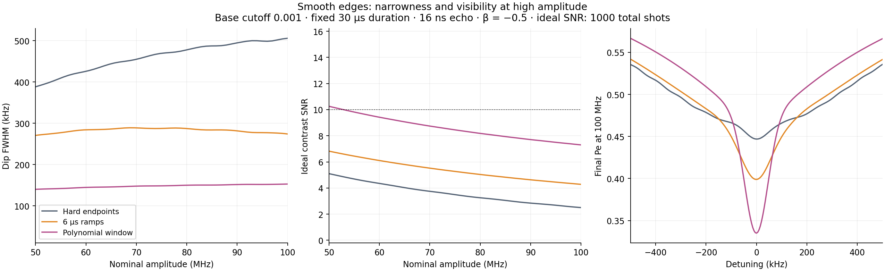
Download this comparison as PDF
Matched physical settings30 µs duration; 16 ns sine echo transition;
β = −0.5; α = −216 MHz; T₁ = 51.24 µs; T₂ = 7.31 µs. Nominal amplitude 0–100 MHz,
100 points; detuning −500 to +500 kHz, 201 points. Lindblad RK4, dt = 0.5 ns.
Ramps occupy the first and last 1, 3 or 6 µs of the existing 30 µs pulse.
SNR is an ideal projection-noise estimate, not experimental SNR.
1000 total shots: 500 at the dip center, 250 at each of ±450 kHz. Signal is the mean shoulder
Pe minus the center Pe. Noise includes independent Bernoulli variance at those three points.
Perfect Pe classification is assumed; technical noise, drift and center-search overhead are absent.
Compared with 20 µs
For the polynomial window at cutoff 0.001 and 100 MHz, FWHM changes from 174.3 to 152.9 kHz and ideal SNR changes from 13.57 to 7.30. The longer pulse gives a narrower dip with lower visibility.
Holding the base cutoff fixed scales the core width σ by 1.5. Here σ is 15.00 ns, 45.00 ns, 75.00 ns for cutoffs 0.001, 0.003, 0.005. This compares the requested settings; it does not isolate duration at fixed σ. The coherence times, echo transition, nominal amplitudes and physical ramp times are unchanged.
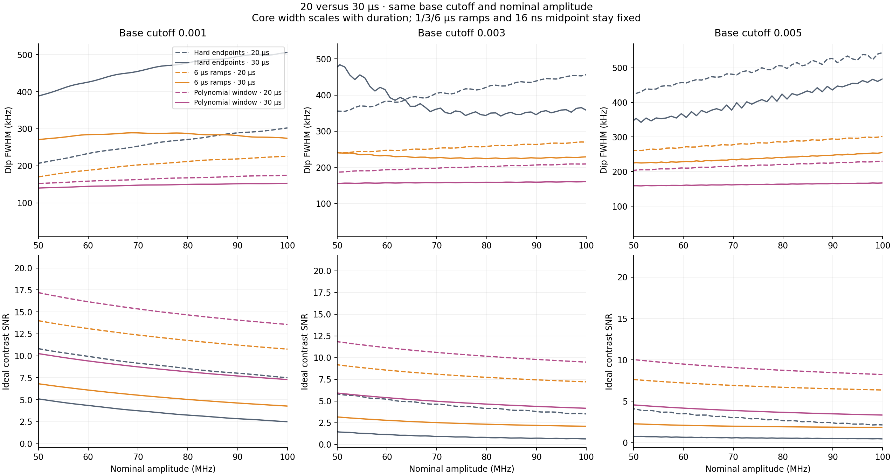
| Cutoff | Window | FWHM at 100 MHz: 20 → 30 µs (kHz) | Ideal SNR at 100 MHz | Points improving both / 50 |
|---|
| 0.001 | Hard endpoints | 302.3 → 506.0 | 7.51 → 2.50 | 0/50 |
| 0.001 | 6 µs ramps | 225.4 → 274.1 | 10.76 → 4.28 | 0/50 |
| 0.001 | Polynomial window | 174.3 → 152.9 | 13.57 → 7.30 | 0/50 |
| 0.003 | Hard endpoints | 456.6 → 357.9 | 3.51 → 0.63 | 0/50 |
| 0.003 | 6 µs ramps | 269.9 → 229.2 | 7.21 → 2.09 | 0/50 |
| 0.003 | Polynomial window | 209.4 → 160.6 | 9.48 → 4.16 | 0/50 |
| 0.005 | Hard endpoints | 544.4 → 468.2 | 2.14 → 0.45 | 0/50 |
| 0.005 | 6 µs ramps | 301.8 → 255.1 | 6.36 → 1.83 | 0/50 |
| 0.005 | Polynomial window | 229.9 → 167.0 | 8.24 → 3.33 | 0/50 |
Duration comparison data
At 100 MHz
| Base cutoff | Window | FWHM (kHz) |
Contrast | Ideal SNR | High-drive points passing 200 kHz / SNR 10 |
|---|
| 0.001 | Hard endpoints | 506.0 | 0.079 | 2.5 | 0/50 |
| 0.001 | 1 µs ramps | 469.5 | 0.088 | 2.8 | 0/50 |
| 0.001 | 3 µs ramps | 397.6 | 0.108 | 3.4 | 0/50 |
| 0.001 | 6 µs ramps | 274.1 | 0.134 | 4.3 | 0/50 |
| 0.001 | Polynomial window | 152.9 | 0.224 | 7.3 | 3/50 |
| 0.003 | Hard endpoints | 357.9 | 0.020 | 0.6 | 0/50 |
| 0.003 | 1 µs ramps | 393.7 | 0.028 | 0.9 | 0/50 |
| 0.003 | 3 µs ramps | 334.6 | 0.049 | 1.6 | 0/50 |
| 0.003 | 6 µs ramps | 229.2 | 0.065 | 2.1 | 0/50 |
| 0.003 | Polynomial window | 160.6 | 0.129 | 4.2 | 0/50 |
| 0.005 | Hard endpoints | 468.2 | 0.014 | 0.4 | 0/50 |
| 0.005 | 1 µs ramps | 487.5 | 0.022 | 0.7 | 0/50 |
| 0.005 | 3 µs ramps | 368.8 | 0.045 | 1.4 | 0/50 |
| 0.005 | 6 µs ramps | 255.1 | 0.058 | 1.8 | 0/50 |
| 0.005 | Polynomial window | 167.0 | 0.104 | 3.3 | 0/50 |
Base cutoff 0.001
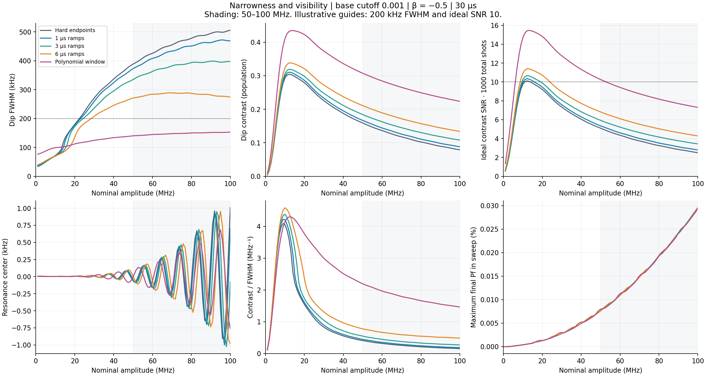
Show all three populations
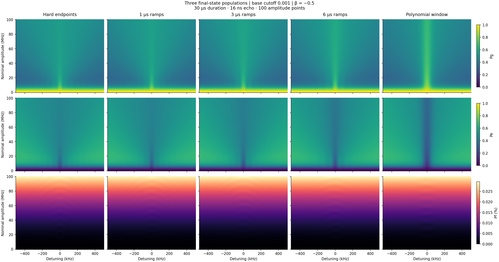
Base cutoff 0.003
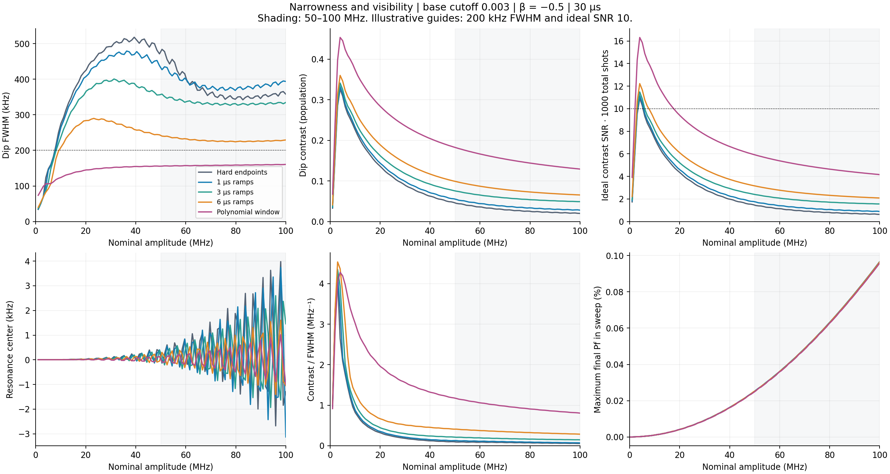
Show all three populations
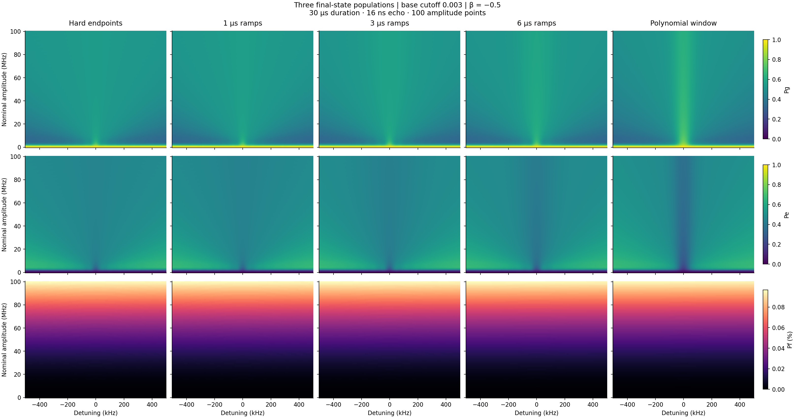
Base cutoff 0.005
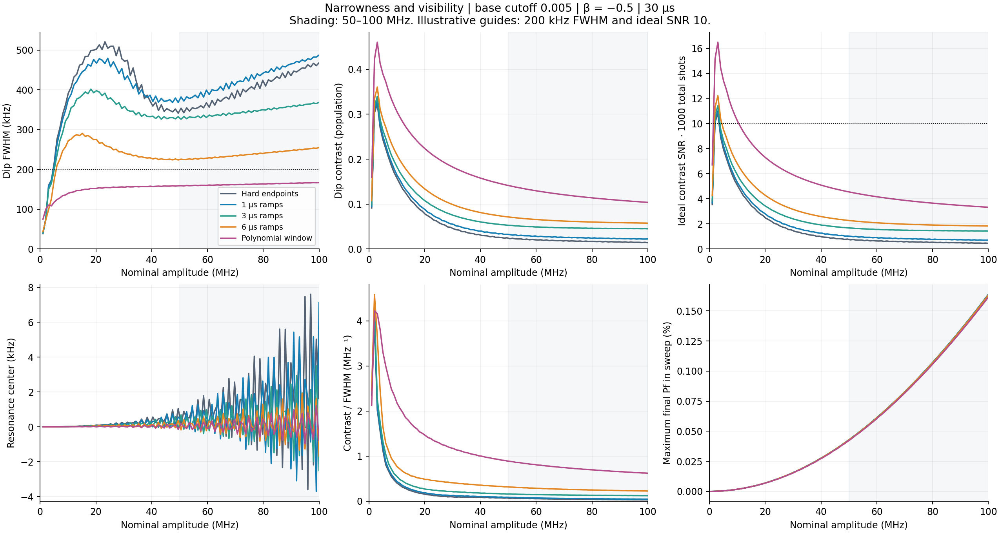
Show all three populations
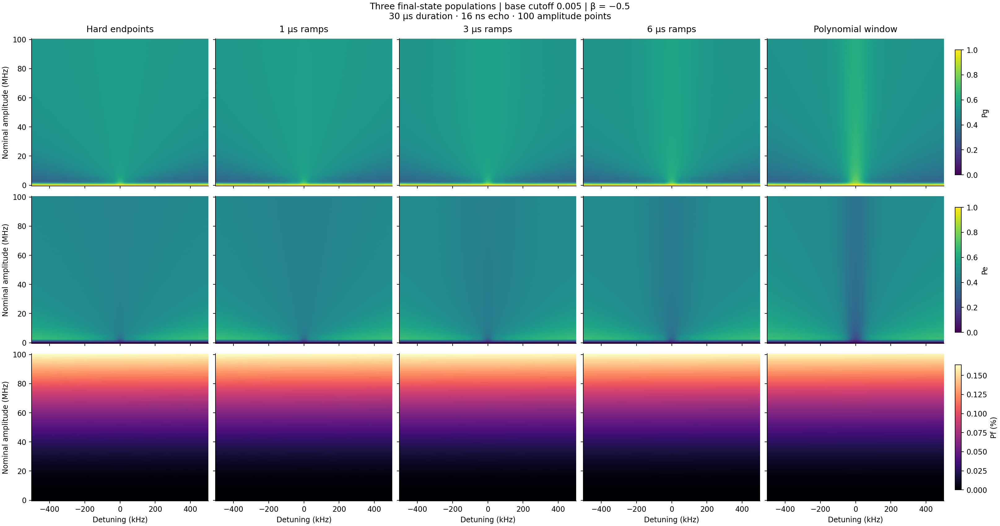
Check the dip itself
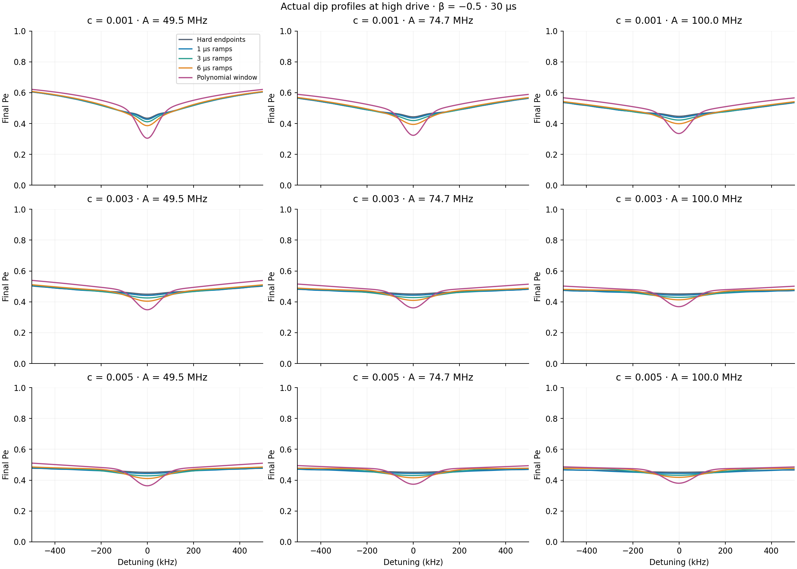
Separate shaping from loss of pulse area
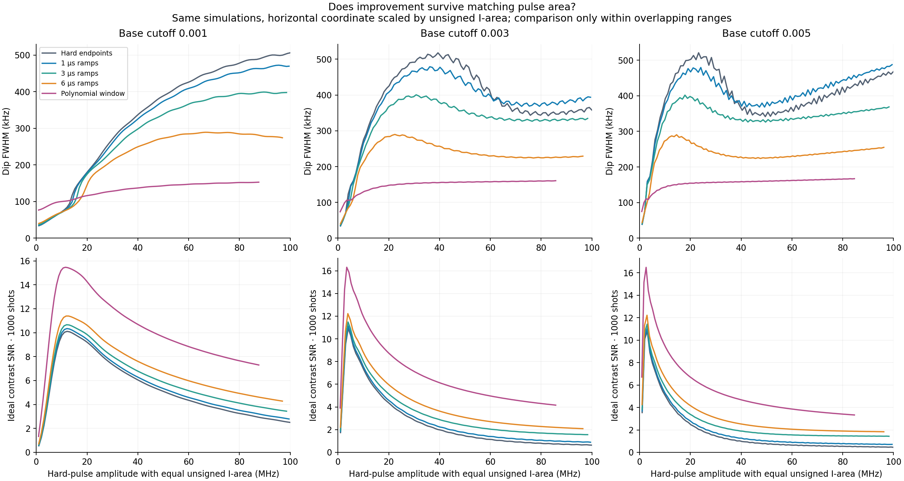
Each curve is plotted against A × (windowed unsigned I-area / hard unsigned I-area).
Equal horizontal coordinates therefore mean equal unsigned I-area within a given cutoff.
This is a re-expression of the simulated grid, with lines joining samples. Compare only the overlapping
horizontal range; the windowed pulse requires a higher nominal amplitude for the same area.
What changed in the waveform?
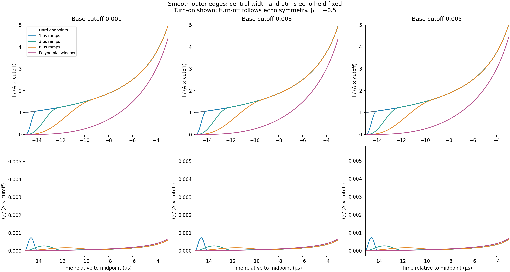
Quintic ramps use w(u) = 10u³ − 15u⁴ + 6u⁵, with u from zero at the endpoint to one at the ramp join.
The polynomial uses w(t) = [1 − (2t/L)²]³. Both have zero value, slope and curvature at the outer endpoints.
DRAG is recomputed from the complete windowed I envelope: Q = −β I′/(2π|α|).
No amplitude or area normalization is applied in the primary comparison.
Unsigned I-area remaining relative to hard endpoints
| Base cutoff | Window | Area remaining |
|---|
| 0.001 | Hard endpoints | 100.00% |
| 0.001 | 1 µs ramps | 99.54% |
| 0.001 | 3 µs ramps | 98.57% |
| 0.001 | 6 µs ramps | 96.93% |
| 0.001 | Polynomial window | 87.63% |
| 0.003 | Hard endpoints | 100.00% |
| 0.003 | 1 µs ramps | 99.47% |
| 0.003 | 3 µs ramps | 98.35% |
| 0.003 | 6 µs ramps | 96.46% |
| 0.003 | Polynomial window | 85.76% |
| 0.005 | Hard endpoints | 100.00% |
| 0.005 | 1 µs ramps | 99.43% |
| 0.005 | 3 µs ramps | 98.22% |
| 0.005 | 6 µs ramps | 96.18% |
| 0.005 | Polynomial window | 84.60% |
Interpretation and reproducibility
FWHM uses the nearest half-depth crossings after a linear background fit at |detuning| ≥ 400 kHz.
Center is the raw central minimum refined by three-point quadratic interpolation. No Gaussian fit or smoothing.
Contrast/SNR uses the actual ±450 kHz shoulders. Width and contrast depend on this measurement window.
The high-drive range is defined here as 50–100 MHz. A narrow feature with negligible contrast is not useful.
Final Pf is not maximum transient leakage. The three-level model omits higher transmon states, transfer-function
distortion and readout errors. Results concern this finite pulse and these coherence parameters.
All metrics CSV · Summary ·
Parameters and source hashes · Waveform areas ·
Independent RK4 implementation agreement
Numerical checks
Checked 4 window/core combinations at three high amplitudes. Maximum population difference: 7.1e-05; maximum FWHM change from dt = 0.5 to 0.25 ns: 15.9 Hz; from 5 to 2.5 kHz detuning steps: 85.5 Hz. Full numerical and equal-area checks.
Software validation and repository limitations · Population and parameter checks
DRAG and wider-frequency controls
Additional β = 0 and −1 checks use three high amplitudes, rather than the full 100-point grid. The line profiles and table below show 100 MHz.
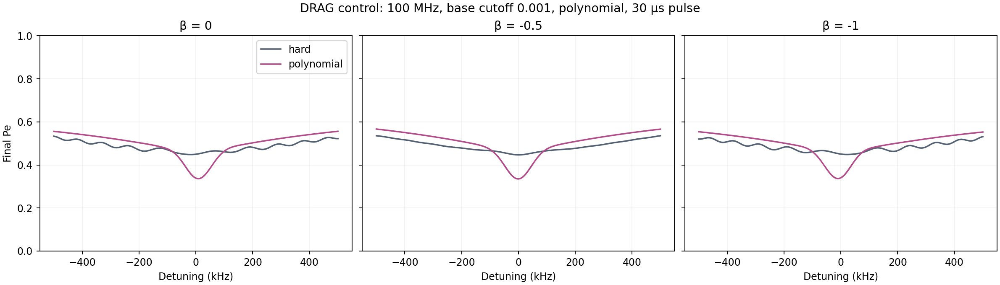
| β | Window | Center (kHz) | FWHM (kHz) | Ideal SNR |
|---|
| 0 | hard | -18.707 | 484.8 | 2.2 |
| 0 | polynomial | 8.506 | 148.3 | 6.9 |
| -0.5 | hard | 1.009 | 506.0 | 2.5 |
| -0.5 | polynomial | -0.758 | 152.9 | 7.3 |
| -1 | hard | 21.611 | 405.9 | 2.2 |
| -1 | polynomial | -10.265 | 146.3 | 6.8 |
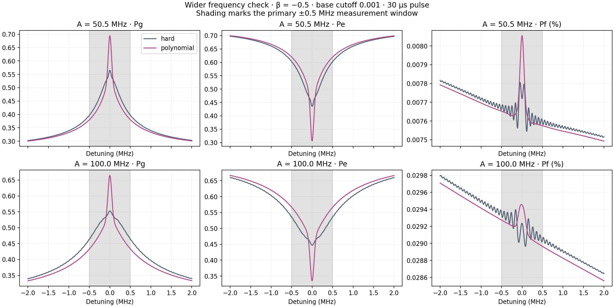
At 100 MHz, moving the reference shoulders from ±0.3 to ±1.0 MHz gives Hard endpoints: 300.1–893.0 kHz; Polynomial window: 135.2–212.1 kHz. The narrower, more visible dip survives every tested shoulder placement.
All DRAG controls · Sensitivity to shoulder placement